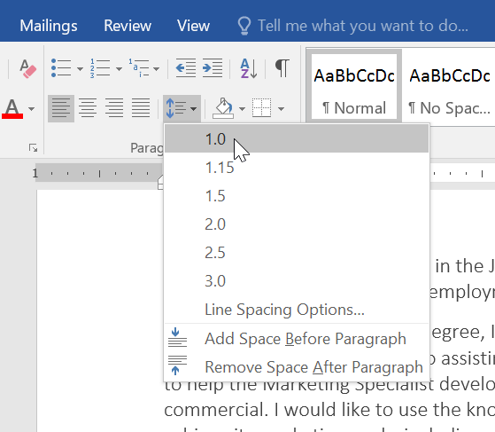
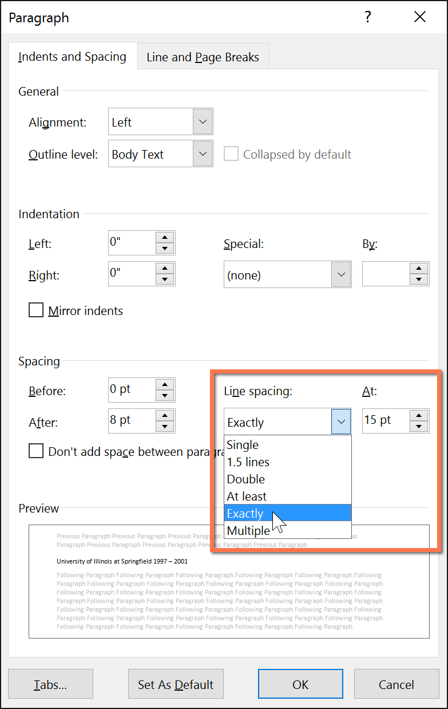
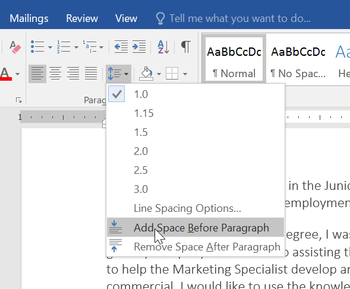
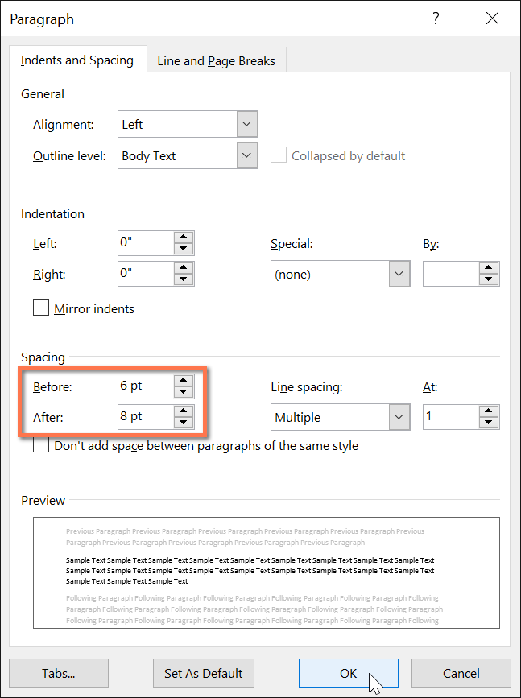

Lesson 9: line-and-paragraph-spacing
Lesson 9: Line and Paragraph Spacing
/en/word/indents-and-tabs/content/
Introduction
As you design your document and make formatting decisions, you will need to consider line and paragraph spacing. You can increase spacing to improve readability and reduce it to fit more text on the page.
Watch the video below to learn how to adjust line and paragraph spacing in your document.

Line spacing
Line spacing is the space between each line in a paragraph. Word allows you to customize the line spacing to be single spaced (one line high), double spaced (two lines high), or any other amount you want. The default spacing in Word is 1.08 lines, which is slightly larger than single spaced.
In the images below, you can compare different types of line spacing. From left to right, these images show default line spacing, single spacing, and double spacing.
Line spacing is also known as leading (pronounced to rhyme with wedding).
To format line spacing:
- Select the text you want to format.
2. On the Home tab, click the Line and Paragraph Spacing command, then select the desired line spacing.

3. The line spacing will change in the document.Adjusting line spacing
Your line spacing options aren't limited to the ones in the Line and Paragraph Spacing menu. To adjust spacing with more precision, select Line Spacing Options from the menu to access the Paragraph dialog box. You'll then have a few additional options you can use to customize spacing.
-
Exactly:When you choose this option, the line spacing is measured in points, just like font size. For example, if you're using 12-point text, you could use 15-point spacing.
-
At least: Like the the Exactly option, this lets you choose how many points of spacing you want. However, if you have different sizes of text on the same line, the spacing will expand to fit the larger text.
- Multiple: This option lets you type the number of lines of spacing you want. For example, choosing Multiple and changing the spacing to 1.2 will make the text slightly more spread out than single-spaced text. If you want the lines to be closer together, you can choose a smaller value, like 0.9.

Paragraph spacing
Just as you can format spacing between lines in your document, you can adjust spacing before and after paragraphs. This is useful for separating paragraphs, headings, and subheadings.
To format paragraph spacing:
In our example, we'll increase the space before each paragraph to separate them a bit more. This will make it a little easier to read.
- Select the paragraph or paragraphs you want to format.
2. On the Home tab, click the Line and Paragraph Spacing command. Click Add Space Before Paragraph or Remove Space After Paragraph from the drop-down menu. In our example, we'll select Add Space Before Paragraph.

3. The paragraph spacing will change in the document.From the drop-down menu, you can also select Line Spacing Options to open the Paragraph dialog box. From here, you can control how much space there is before and after the paragraph.

You can use Word's convenient Set as Default feature to save all of the formatting changes you've made and automatically apply them to new documents. To learn how to do this, read our article on Changing Your Default Settings in Word.
Challenge!
- Open our practice document.
- Select the the date and the address block. This starts with April 13, 2016, and ends with Trenton, NJ 08601.
- Change the spacing before the paragraph to 12 pt and the spacing after the paragraph to 30 pt.
- Select the body of the letter. This starts with I am exceedingly and ends with your consideration.
- Change the line spacing to 1.15.
- When you're finished, your page should look like this:
/en/word/lists/content/